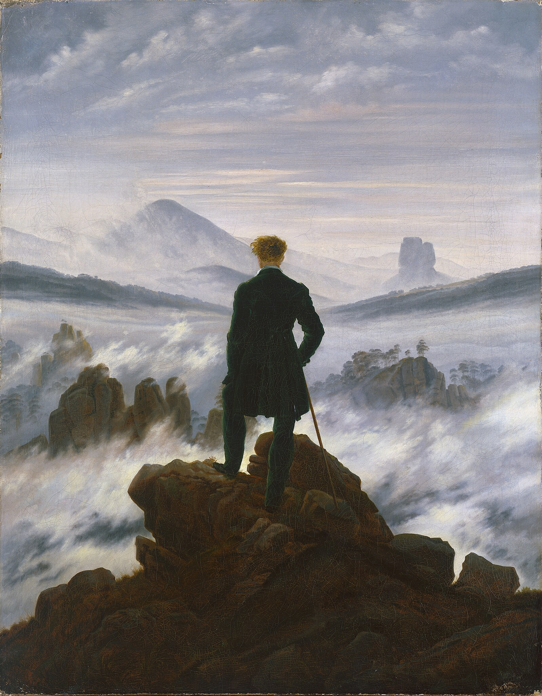

The philosophy of Friedrich Nietzsche, read theme by theme.
A guide to reading Nietzsche through 25 themes, with sequenced passages and explanations. Start with one short session or explore a question of your own.

Twenty-five themes drawn from across the corpus — the death of God, the revaluation of values, eternal recurrence, the will to power — each with a sequenced selection of passages from the books that develop it. The aim is not summary but study: to give you a way in, and a route through.
Start here
If you are coming to Nietzsche fresh and want a shape for your first weeks, this four-theme arc gives you the spine of the late work — the diagnosis, the project, and the personal formula that answers them.
-
The Death of God
The diagnosis. Begin here, with the cultural event whose consequences the rest of the late work tries to draw out.
-
Nihilism
The threat the diagnosis activates — and the typology that lets us tell varieties of it apart.
-
The Revaluation of Values
Nietzsche's constructive program: the only honest response, on his view, to what the diagnosis names.
-
Amor Fati
The personal counter-formula. To love what is necessary is the disposition that would let one pass beyond nihilism rather than collapsing under it.
From there, follow the cross-references each theme gives you, or pick a thread of your own from the themes index.
Other entrances
- Beyond Good and Evil: guide and course→
Ten complete introductory lessons across all nine parts: truth, value creation, moral authority, and rank.
-
All twenty-five themes→
Clustered and filterable — by theme, by period, alphabetically.
-
The corpus, book by book→
From The Birth of Tragedy through Ecce Homo, with every theme that draws on each.
-
Glossary of terms→
Brief glosses on the recurring vocabulary — ressentiment, Übermensch, amor fati, will to power.
-
About this guide→
Interpretive stance, what is in and out of scope, how the reading paths are built.
How one becomes what one is. The subtitle of Ecce Homo, after Pindar's Pythian 2.72
Nietzsche is a philosopher you read with care or not at all. He writes in aphorisms; he contradicts himself; he changes his mind across periods and expects you to notice. A reading path matters because the order in which you encounter the passages is part of the argument. This site gives you paths — short, deliberate sequences, with brief notes on why each one runs the way it does.